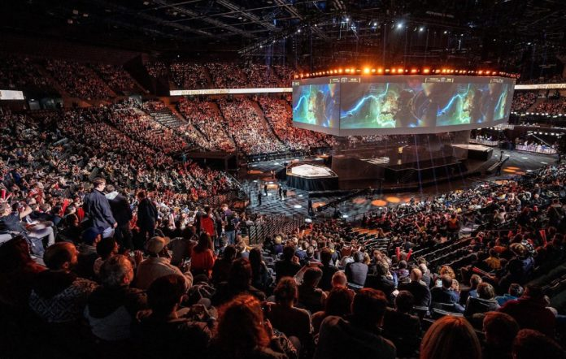

What is Esports?
Esports, or electronic sports, refers to competitive video gaming at a professional level. Players and teams from around the world compete in various games, attracting millions of viewers both online and in arenas. With tournaments offering huge prize pools and sponsorships, Esports has grown into a billion-dollar industry.
The Future of Esports
Esports is poised for unprecedented growth as technology continues to evolve and global interest expands. The integration of virtual reality (VR) and augmented reality (AR) into competitive gaming could revolutionize the way audiences experience Esports, making it even more immersive and interactive. Additionally, the rise of mobile gaming is expected to bring Esports to a broader demographic, further increasing its popularity. As mainstream media and large corporations invest more in Esports, the industry will likely see more professional leagues, larger prize pools, and greater recognition as a legitimate sport. This growth will also open up new opportunities for players, content creators, and businesses, cementing Esports as a dominant force in the entertainment landscape.
Top Esports Titles
- League of Legends: A multiplayer online battle arena (MOBA) game known for its strategic depth and large international tournaments like the World Championship.
- Counter-Strike: Global Offensive (CS:GO) A tactical first-person shooter (FPS) with a strong emphasis on teamwork and strategy.
- Dota 2: Another MOBA game famous for its high-stakes tournament, The International, which boasts one of the largest prize pools in Esports.
- Overwatch: A team-based FPS with a colorful cast of characters and fast-paced gameplay.
- Fortnite: A battle royale game that has taken the world by storm with its unique building mechanics and massive in-game events.

Careers in Esports
Esports offers a diverse range of career opportunities, extending far beyond just playing games professionally. Aspiring professionals can explore roles such as game commentators, also known as shoutcasters, who provide live analysis and commentary during tournaments, bringing the excitement of the matches to life. Coaches are essential in helping teams strategize and improve their gameplay, while event organizers plan and execute the large-scale tournaments that draw audiences from around the globe. Additionally, content creators and streamers have become influential figures in the industry, building personal brands and engaging with fans through platforms like Twitch and YouTube. With the industry's rapid growth, Esports careers are becoming more viable and rewarding, offering a variety of paths for those passionate about gaming.